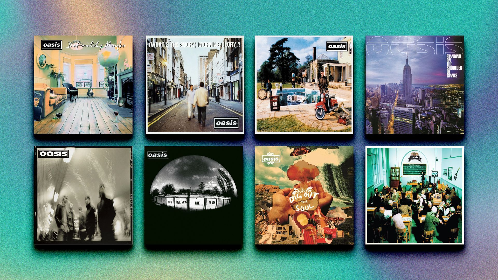

Discografia Completa do Oasis

A discografia do Oasis é um tesouro de hinos do rock que transcenderam fronteiras e gerações. Cada álbum, com sua própria identidade, contribuiu para consolidar a banda como um dos pilares do Britpop e do rock alternativo. Vamos mergulhar nos detalhes de cada um deles:
Álbuns de Estúdio:
- Definitely Maybe (1994) O estrondoso álbum de estreia que lançou o Oasis ao estrelato. Repleto de energia bruta e refrões pegajosos, inclui clássicos como "Supersonic", "Live Forever" e "Rock 'n' Roll Star". É tipo o TCC da banda, sabe? Onde tudo começou!
- (What's the Story) Morning Glory? (1995) Considerado por muitos como a obra-prima do Oasis e um dos álbuns mais vendidos da história britânica. Apresenta os megahits "Wonderwall", "Don't Look Back in Anger" e "Champagne Supernova". Esse aqui é o álbum que toca em qualquer festa boa, juro!
- Be Here Now (1997) O álbum mais aguardado na época, chegou com uma expectativa enorme. É grandioso, ambicioso e um pouco exagerado para alguns, mas tem momentos brilhantes como "D'You Know What I Mean?" e "Stand by Me". Imagina a pressão de lançar algo depois de um álbum como Morning Glory, né?
- Standing on the Shoulder of Giants (2000) Marcou uma mudança na sonoridade da banda, com influências mais psicodélicas e eletrônicas. Foi o primeiro álbum sem Bonehead e Guigsy. "Go Let It Out!" é um destaque. Pra mim, eles estavam experimentando, e é super normal depois de tanto sucesso.
- Heathen Chemistry (2002) Um retorno a um som mais direto e rock 'n' roll, com contribuições de composição de todos os membros. Contém "The Hindu Times" e "Stop Crying Your Heart Out". É tipo quando a gente volta para o básico depois de tentar umas loucuras, sabe?
- Don't Believe the Truth (2005) Amplamente elogiado como um retorno à forma da banda, com um som mais conciso e composições fortes. "Lyla" e "The Importance of Being Idle" são destaques. Tipo a gente no quinto semestre, mais maduro e com mais foco!
- Dig Out Your Soul (2008) O último álbum de estúdio do Oasis antes do seu hiato. Apresenta uma pegada mais psicodélica e groove, com faixas como "The Shock of the Lightning". Uma despedida que deixou um gostinho de quero mais...
Álbuns ao Vivo e Compilações Marcantes:
- Familiar to Millions (2000) Um registro ao vivo espetacular do show da banda no Estádio de Wembley. Captura a energia e a magnitude das performances do Oasis. Assistir esse show é quase como estar lá, sério!
- Stop the Clocks (2006) Uma coletânea essencial para quem quer os maiores sucessos e um panorama da carreira da banda até então. Perfeito pra quem tá começando a ouvir Oasis!
- Time Flies... 1994–2009 (2010) Uma coleção abrangente de todos os singles do Oasis, desde "Supersonic" até "Falling Down". É tipo um resumão da banda, perfeito pra botar no repeat.